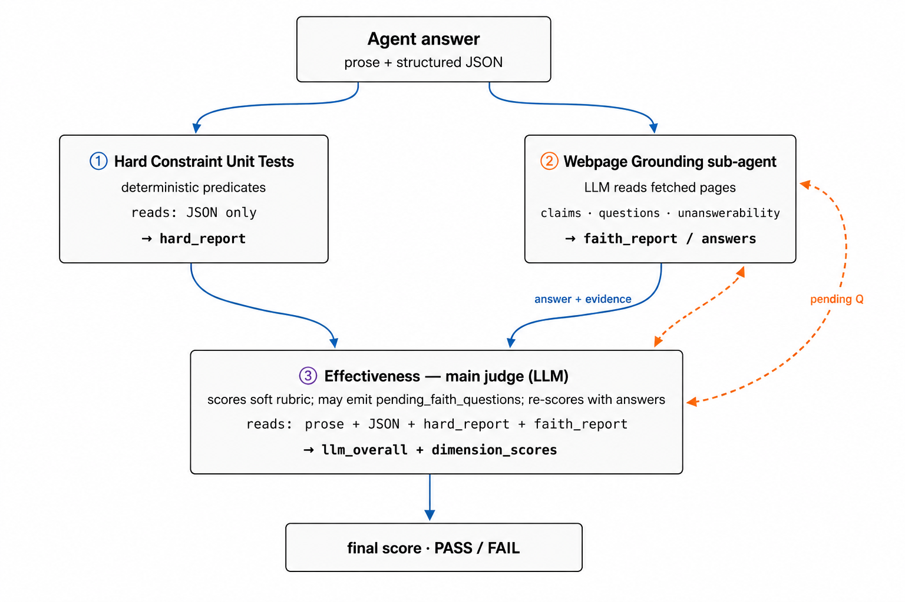

A single language model reading the agent's prose and assigning a score can be fooled by an answer that looks well-cited but isn't. The agentic judge keeps the rubric scoring, adds a small layer of structural checks for the things that have one right answer, and gives the main judge a source-checking helper it can ask to actually open the cited pages and verify what the agent said.

"I'm looking for a backpack under $75 that has all the features of this product. Please do some research and find three to five options and summarize their key features and prices, comparing them to the original. At the end, also produce a structured summary — one block listing each option with its name, URL, price, features, and a short note comparing it to the original. The grader will fetch each URL and verify the figures and quotes against the live page, so be precise."
"Output your structured summary as a JSON block between === JSON RESULT === and === END JSON ===."
Required fields: reference_product.url, options, and for each option: name, url, price, features, comparison_notes.
Optional but rewarded: options[].asin, rating, review_count, …
… prose narrative explaining what each backpack offers …
=== JSON RESULT ===
{
"reference_product": {
"url": "https://www.amazon.com/dp/B09YRC9Y3G",
"name": "Taskin New | Carry-on Large Travel Backpack",
"features": ["expandable 20/30/40L", "convertible handles", "professional"]
},
"options": [
{
"name": "Gieury Anti-Theft Laptop Backpack",
"url": "https://www.amazon.com/dp/B0BDLH7K67",
"price": 49.99,
"features": ["USB port", "TSA-friendly", "anti-theft pockets"],
"comparison_notes": "…"
},
{
"name": "Sirmaeed 35L Carry-on",
"url": "https://www.amazon.com/dp/B0FDKLS9YY",
"price": 38.99,
"features": ["expandable", "luggage strap"],
"comparison_notes": "…"
},
{
"name": "Amazon Basics Travel Backpack",
"url": "https://www.amazon.com/dp/B01J24H2K0",
"price": 59.99,
"features": ["40L", "convertible"],
"comparison_notes": "…"
},
{
"name": "MATEIN 40L Carry-on",
"url": "https://www.amazon.com/dp/B07NV3VZ76",
"price": 39.99,
…
},
{
"name": "VANKEAN 17.3-inch Laptop Backpack",
"url": "https://www.amazon.com/dp/B07XYZ",
"price": 44.99,
…
}
]
}
=== END JSON ===
Coloured underlines mark where each judge looks. Blue is for the structural checks, amber for the source-checking helper (the URLs it fetched), and the main judge reads everything in scope.
A small list of programmatic checks on the agent's structured answer — the kinds of things that have one right answer per task: did the agent put a recipient in the recipient slot, are all five prices under the budget, did the schema get filled in, does the cited URL look like a URL. No language model is involved. Each check passes or fails with a short reason.
CHECKS = [ schema_filled_in, options_count_between_3_and_5, every_price_under_75, every_option_has_a_url, reference_product_url_present, ]
For every page the agent cited, this helper fetches the page and asks a language model: does this page actually back up what the agent said about it? If yes, it returns a short quote from the page as evidence; if no, it explains why. It can also answer follow-up questions from the main judge — for example, "the agent said this source doesn't mention X; can you confirm that on the page?"
You are a precise source-checking helper. You are given: - the rendered text of a web page the agent cited as evidence, - the agent's specific claim about that page, - (optional) a follow-up question from the main judge. Decide whether the page actually supports the claim, and answer the follow-up if there is one. Paraphrases count; numeric values must be within plausible rounding; if the page is empty, blocked, or off-topic, mark unsupported. Reply with: supported : yes / no evidence_quote : a short verbatim snippet from the page answer : your answer to the follow-up (if any) reasoning : one short sentence
One model reads the whole picture: the agent's answer, its structured summary, the results of the structural checks, the source-checking results, and the agent's full work trace (every tool call, every page it actually visited, including dead ends and pages it never wrote down). It scores each rubric dimension and writes a short justification.
When something doesn't add up — a citation that looks fishy, a "couldn't find it" claim worth double-checking, a source the agent visited but never quoted — the main judge sends a follow-up question back to the source-checking helper, waits for the answer, and then revises its scores. The verdict it ships is always the revised one.
The judge inherits whatever rubric the task already came with — the same dimension names, weights, and what-counts-as-a-5 language that the original task used. That means it's not inventing standards; it's just scoring against the existing ones with more grounding to lean on.
You are the main evaluator scoring an AI agent's work. You have
four pieces of evidence:
1. the agent's structured summary,
2. the structural-check results,
3. the source-checking results for the URLs in the summary,
4. the agent's full work trace — every tool call, every page it
opened to verify something, every dead end.
Read the trace carefully. Agents often visit pages they never put
in their final summary; those pages are still load-bearing for
your verdict.
If you are uncertain about whether a cited page supports a claim,
or if the agent says "I couldn't find X" and you want to verify
that, send a follow-up question to the source-checking helper.
The helper will fetch the page and reply; you will then re-score
with the new evidence. Cap: 3 follow-ups per task.
You must send a follow-up in these cases:
- The source-checking helper says a claim is unsupported but you
suspect a paraphrase was missed.
- The agent's trace shows a URL that the helper has not yet
verified and the answer would change a score.
Score honestly. Structural checks check shape — not semantic
quality. An option priced $74.99 satisfies the budget cap even
if its features have nothing to do with what the user asked for.
A perfect structural pass does not automatically mean a perfect
soft-rubric score; read the agent's reasoning before assigning a
five.
The judge inherits the task's existing rubric — the dimension names, weights, and what-counts-as-a-5 anchor language — directly from the task definition. For the shopping example, the judge is given:
Dimensions to score (1 to 5):
- constraint_satisfaction (weight 0.30)
- result_specificity (weight 0.25)
- comparison_quality (weight 0.25)
- task_completeness (weight 0.20)
Anchor language:
constraint_satisfaction
1 = budget cap ignored
3 = some items over budget
5 = every option within budget AND every feature of the
reference covered
result_specificity
1 = generic suggestions
3 = brand and model named
5 = exact product code, price, and URL per item
comparison_quality
1 = list only, no comparison
3 = a couple of features compared
5 = each option mapped back to each of the reference's features
task_completeness
1 = fewer than 3 options returned
3 = 3 or 4 options
5 = 3 to 5 options with a full feature sweep
All five structural checks passed (the agent gave five options, every price was under the budget, every URL was well-formed, the schema was complete). The source-checking helper visited the four cited Amazon pages and found that three of them did not actually contain the brand the agent had attributed to that product — the URLs were real, but they didn't lead to the products the agent named.
The main judge read the agent's full work trace alongside this and concluded that the answer was structurally fine and the comparison was thoughtful, but the specificity and completeness dimensions couldn't be a perfect 5 — the cited evidence wasn't holding up. The final score landed in the passing range, but lower than the rubric judge alone would have given it: a more honest reflection of what the agent actually delivered.
| Task | What the judge caught |
|---|---|
| Backpack search | Three of four cited Amazon pages didn't actually contain the products the agent named. |
| Clementines question | Rubric grader returned nothing; the other layers verified the cited source and produced a passing verdict on their own. |
| 2025 calendar | Three of four cited pages verified; the one empty page was flagged and the source-navigation score lowered. |
| Camera shopping | Structural checks all passed, but cited Amazon pages came back empty — the judge lowered specificity instead of awarding a perfect rubric. |
| SEC EDGAR lookup | Agent skipped the required structured block; the structural check failed first, so the verdict reflected the schema miss rather than the answer's quality. |
| Issue | What happens and what we'd add |
|---|---|
| Shape passes but the reasoning is wrong | An option priced $74.99 satisfies the budget rule even if its features have nothing to do with what the user asked for. Fix: more semantic checks where there's a single objective truth, and lean harder on the rubric judge's reading of the agent's trace. |
| An infrastructure error looks like a bad answer | When the agent's environment crashes or auth breaks, the verdict is just a low score with no signal of why. Fix: a separate infrastructure-error flag, distinct from the score. |
| Issue | What happens and what we'd add |
|---|---|
| Anti-bot pages render empty for our fetcher | The source-checking helper gets a near-empty page and reports the citation as unsupported, even when the agent saw a real product in its browser. Fix: distinguish "page blocked or empty" from "page renders but doesn't support the claim," and ignore the former. |
To check whether the judge gives the same answer twice, we ran it five times on the same three saved agent answers. Nothing about the answers changed between runs — only the judge's own language-model calls. The chart below shows the final score (out of 5) per run.
Two of the three tasks land at exactly the same score on every run. The shopping task is the unstable one — its citations point to pages our fetcher receives as near-empty due to anti-bot protection, and the judge has to decide what to do about that on its own.
On the shopping task, the breakdown by rubric dimension over the same five runs:
| Dimension | Mean | Std. dev. | Range |
|---|---|---|---|
| constraint_satisfaction | 5.00 | 0.00 | [5, 5] |
| comparison_quality | 3.80 | 0.45 | [3, 4] |
| task_completeness | 4.20 | 0.84 | [3, 5] |
| result_specificity | 4.40 | 1.34 | [2, 5] |
The variance is not noisy — it is bimodal. Four of the five runs cluster near 4.9; one drops sharply to 3.5. The split is governed by whether the main judge decides to send follow-up questions to the source-checking helper for the borderline anti-bot pages. When it does (run 5 sent three follow-ups), the second-pass re-score drags result_specificity from 5 to 2; when it does not, the original score holds.
The fix is straightforward: instead of letting the language model decide when a follow-up is necessary, set a programmatic gate — whenever fewer than half the cited pages verify, the runner forces a follow-up automatically. That converts the loop's firing condition from a model-asked behaviour into a deterministic one and should remove the bimodal split.